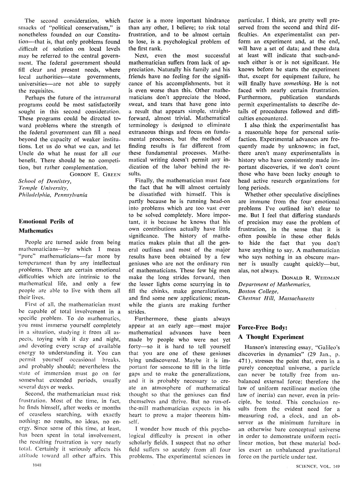

Emotional Perils of Mathematics: An Imaginary Dialogue
In 1965, Science printed a short letter by a mathematician at Boston College on the emotional perils of the mathematical life. Sixty years later, amidst translating the letter into Persian, the logician Ali Enayat found himself in a dialogue with the author — and the translation grew into a conversation across time, with Hafez, Brodsky, and artificial intelligence joining in. Weidman speaks here in his own 1965 words.

In 1965, a letter by Donald Weidman,1 an American mathematician, entitled “Emotional Perils of Mathematics” was published in Science [1]. The letter was later reprinted in a collection of essays revolving around various aspects of mathematics [2] and attracted considerable attention. Weidman addresses certain features of the mathematical profession that have received relatively little attention. I first came across this text about forty years ago, just after completing my doctoral dissertation. Over the years I returned to it from time to time, but recently, after revisiting it following a long interval, I found it more mature and compelling than ever. I suspect this is because appreciating the depth of its content is directly related to the breadth of the reader’s experiences and observations. While translating the text, I had the idea of presenting its points as an imagined conversation between “D.W.” (Donald Weidman) and “A.E.” (myself). I am grateful to Dr. Siavash Shahshahani for his assistance in the preparation of the final version of this piece.
An imaginary dialogue
“D.W.”: People are turned aside from being mathematicians — by which I mean “pure” mathematicians — far more by temperament than by any intellectual problems. There are certain emotional difficulties which are intrinsic to the mathematical life, and only a few people are able to live with them all their lives.
“A.E.”: I agree with the general framework of your claim, but I would add two complementary points. First, a person’s moral standards and convictions are intertwined with what we refer to as their temperament. The second point — obvious, but worth emphasizing — concerns external factors: even in the case of affluent societies, the particular temperament, ethos, and mode of conduct that a mathematical life calls for might be suppressed in certain cultural and social environments, while in others they might be given the opportunity to grow and flourish.
“D.W.”: First of all, the mathematician must be capable of total involvement in a specific problem. To do mathematics, you must immerse yourself completely in a situation, studying it from all aspects, toying with it day and night, and devoting every scrap of available energy to understanding it. You can permit yourself occasional breaks, and probably should; nevertheless the state of immersion must go on for somewhat extended periods, usually several days or weeks.
“A.E.”: We should not pass too quickly over the “occasional breaks” that you mentioned, because the mental and physical activities undertaken while “resting” play a major role in the long-term quality of a mathematician’s work. Indeed, it is often only after setting aside pen, paper, books, and familiar methods that original ideas and “nonlinear” advances have a chance to take shape in one’s intuition in a somewhat unconscious manner. What can appear from the outside to be a mathematician’s period of rest often plays a decisive role in creative mathematical work. These days, psychologists and cognitive scientists constantly discuss the complex and vital processing that takes place in the brain’s neural networks during rest — especially during sleep.
“D.W.”: Second, the mathematician must risk frustration. Most of the time, in fact, he finds himself, after weeks or months of ceaseless searching, with exactly nothing: no results, no ideas, no energy. Since some of this time, at least, has been spent in total involvement, the resulting frustration is very nearly total. Certainly it seriously affects his attitude toward all other affairs. This factor is a more important hindrance than any other, I believe; to risk total frustration, and to be almost certain to lose, is a psychological problem of the first rank.
“A.E.”: I do not think any experienced mathematician has managed to avoid the pain you describe. Often, upon encountering defeat despite my best efforts in unravelling a mathematical enigma, I have found consolation in the celebrated couplet by Hafez:
Hafez contrived a thousand deceits in the realm of thought,In the fantasy of subduing the beloved, all for nought.
We should also remember that someone who truly understands Saadi’s counsel, “No treasure is gained without toil,” or Rudaki’s saying, “In harsh adversity are excellence, greatness, and leadership revealed,” and who regards hardship as an inseparable part of attaining lofty desires and goals, is better able to withstand what you refer to as a psychological problem of the first rank. At the same time, I concede that the problem has no straightforward, universally applicable solution.
“D.W.”: Next, even the most successful mathematician suffers from lack of appreciation. Naturally his family and his friends have no feeling for the significance of his accomplishments, but it is even worse than this. Other mathematicians don’t appreciate the blood, sweat, and tears that have gone into a result that appears simple, straightforward, almost trivial. Mathematical terminology is designed to eliminate extraneous things and focus on fundamental processes, but the method of finding results is far different from these fundamental processes. Mathematical writing doesn’t permit any indication of the labor behind the results.
“A.E.”: The features you describe are familiar to artists. Those acquainted with the history of art and literature know that intense rivalry and jealousy are common among artists, often causing them to ignore one another’s work or belittle its importance. It is often said that major writers do not read one another. Moreover, just as reading a mathematical paper does not reveal the steep, uneven path — full of anxiety and obstacles — that its author traveled, neither can one infer the source of inspiration, the complex process of gestation, or the hardships, trials, and errors that lie behind the creation of a work of art.
“D.W.”: Finally, the mathematician must face the fact that he will almost certainly be dissatisfied with himself. This is partly because he is running head-on into problems which are too vast ever to be solved completely. More important, it is because he knows that his own contributions actually have little significance. The history of mathematics makes plain that all the general outlines and most of the major results have been obtained by a few geniuses who are not the ordinary run of mathematicians. These few big men make the long strides forward, then the lesser lights come scurrying in to fill the chinks, make generalizations, and find some new applications; meanwhile the giants are making further strides.
Furthermore, these giants always appear at an early age — most major mathematical advances have been made by people who were not yet forty — so it is hard to tell yourself that you are one of these geniuses lying undiscovered. Maybe it is important for someone to fill in the little gaps and to make the generalizations, and it is probably necessary to create an atmosphere of mathematical thought so that the geniuses can find themselves and thrive. But no run-of-the-mill mathematician expects in his heart to prove a major theorem himself.
“A.E.”: Here too, one can see striking similarities with the realm of art. Contemporary poets, in every language and especially in Persian, are well aware that the poems they compose cannot attain the celestial heights of the compositions of their literary ancestors, and that great poets arrive only sporadically. Yet this does not diminish their passion and enthusiasm, but rather reassures them that they have entered a vast and delightful realm whose central pathways were revealed by the great figures of the past, a realm replete with possibilities for the exploration and cultivation of entirely new roads. Thus, once again, the ambient culture combined with a mathematician’s value system play a decisive role in how they assess their own work and its relation to the surrounding mathematical community.
“D.W.”: I wonder how much of this psychological difficulty is present in other scholarly fields. I suspect that no other field suffers so acutely from all four problems. The experimental sciences in particular, I think, are pretty well preserved from the second and third difficulties. An experimentalist can perform an experiment and, at the end, will have a set of data; and these data at least will indicate that such-and-such either is or is not significant. He knows before he starts the experiment that, except for equipment failure, he will finally have something. He is not faced with nearly certain frustration. Furthermore, publication standards permit experimentalists to describe details of procedures followed and difficulties encountered.
“A.E.”: I agree completely, and the only thing that occurs to me is a remark by the Russian poet Joseph Brodsky: if your profession is finance or piloting an airplane, you know that sufficient experience guarantees profit or safe landings. But in writing [poetry], what one accumulates is not experience but uncertainty — which is another name for the artistic profession. In this realm, anxiety is the normal state of mind.
“D.W.”: I also think the experimentalist has a reasonable hope for personal satisfaction. Experimental advances are frequently made by unknowns; in fact, there aren’t many experimentalists in history who have consistently made important discoveries, if we don’t count those who have been lucky enough to head active research organizations for long periods. Whether other speculative disciplines are immune from the four emotional problems I’ve outlined isn’t clear to me. But I feel that differing standards of precision may ease the problem of frustration, in the sense that it is often possible in these other fields to hide the fact that you don’t have anything to say. A mathematician who says nothing in an obscure manner is usually caught quickly — but, alas, not always.
“A.E.”: Since I am speaking with you through a “time tunnel,” I can mention a point that was less often raised in your era — or perhaps was not raised at all. Today, pure and applied mathematics no longer have the clear and definite boundary they had sixty years ago. The main reason is the striking development of computer technologies and their entanglement with branches of pure mathematics that, in your time, would have been imagined to be of no value to any “real world” applications (such as category theory). As a result, some pure mathematicians have found far broader opportunities to make their presence felt through engagement with the world around them. On the other hand, contemporary technologies that enable computers to discover and present proofs of new mathematical theorems are changing the very fabric of mathematics. The arrival of a formidable rival in the guise of artificial intelligence has added to the existential preoccupations of mathematicians [3]. It is possible that, in the not-too-distant future, the profession that has been the subject of our conversation will have a completely different shape, and that the mathematical culture familiar to you and me will be of interest only to historians of science and psychologists. Yet, deep down, I believe that there will remain a devoted cadre who will keep the flame of pure mathematics alive at all costs.
1 — Donald R. Weidman, then of the Department of Mathematics, Boston College, Chestnut Hill, Massachusetts.
Sources
- D. R. Weidman. “Emotional Perils of Mathematics.” Science, New Series, Vol. 149, No. 3688 (Sep. 3, 1965), p. 1048.
- D. M. Campbell and J. C. Higgins (eds.). Mathematics: People · Problems · Results. Wadsworth Publishing Company, 1980.
- M. Harris. “Automation compels mathematicians to reflect on our values.” Bulletin (New Series) of the American Mathematical Society 61 (2) (2024), 331–342.
- علی عنایت. «چالشهای روحیِ ریاضیات: یک گفتگوی خیالی.» خبرنامهٔ انجمن ریاضی ایران، شمارهٔ پیاپی ۱۸۲ (بهار ۱۴۰۴)، صص ۳–۵.